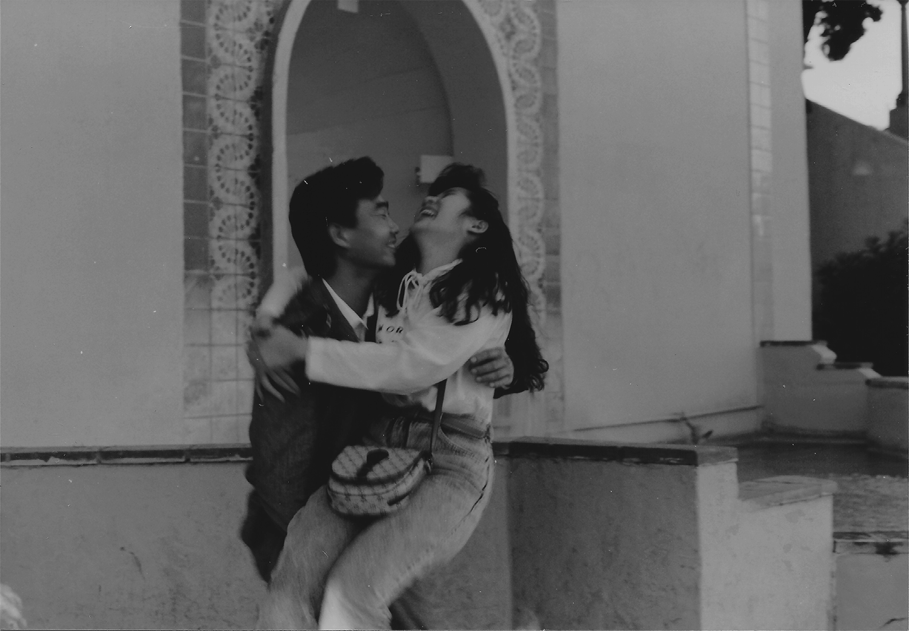
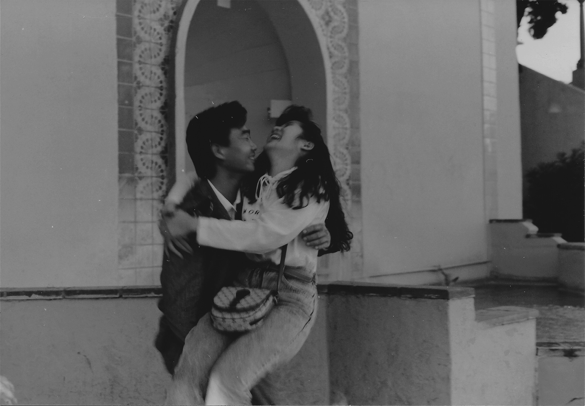

Carter Duong is a designer, developer, and artist from
the Bay Area1+2 and based in Los Angeles3.
He recently graduated from UC San Diego4 with a B.A.
in Interdisciplinary Computing and the Arts5.
EMAIL
ARE.NA
TUMBLR

INFO
Carter Duong is a designer, developer, and artist from
the Bay Area (510 + 925) and based in Los Angeles (626).
He recently graduated from UC San Diego with a B.A.
in Interdisciplinary Computing and the Arts.
EMAIL
ARE.NA
TUMBLR


Fashion Quarterly
A student-run publication that celebrates the intersection of style, art, and design at UC San Diego.


Heavy Friends
A microsite for a weekly radio show based out of KSDT at UC San Diego.
Résumé
A short game about being true to yourself.

Posters
 

Extras